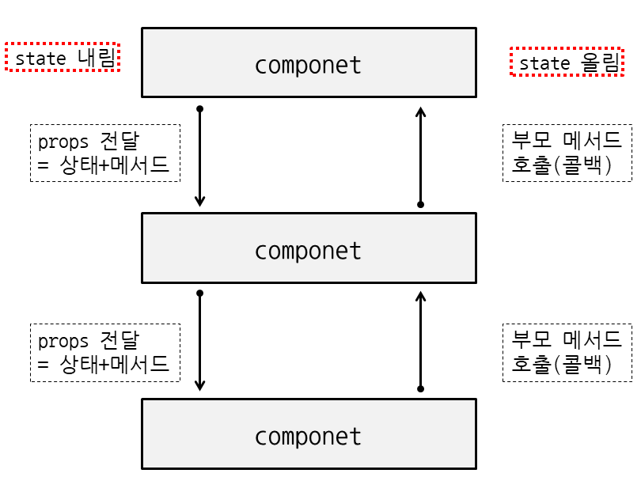

함수 컴포넌트
useState() 훅
useEffect() 훅
useRef() 훅
useContext() 훅
왜 함수 컴포넌트를 사용하나?
==> 클래스 컴포넌트의 문제점을 해결하기
1. 생명주기 메서드에서 코드 스파게티 발생.
2. 코드 난독화 오류 발생.
state를 이용하는 상태 관리 방법을 학습한다
state 는 컴포넌트 내에서 사용되는 변수다.
state 를 선언하려면 useState() 훅을 사용하여 변경해야 한다.
컴포넌트는 무엇인가? 수정없이 재사용 가능한 화면 블락
One Way Data Flow of React

React의 컴포넌트 사이에서 데이터를 주고 받는 방법에 대해서 배운다.
부모가 자식에게 데이터를 전달하는 것은 자식컴포넌트에서 부모컴포넌트의 데이터를 이용한(읽기) 로직을 처리하기 위함이고,
자식 컴포넌트에서 부모컴포넌트로 데이터를 전달하는 것은 부모 state의 값을 변경하기 위함입니다.
state down vs state up
- state down: 부모 -> 자식 데이터 전달
- state up: 자식 -> 부모 데이터 전달

1. ExampleContainer, Example 컴포넌를 만든다.
2. ExampleContainer 컴포넌트의 상태값 만들기
const [count, setCount] = useState(0); // "count"라는 새 상태 변수를 선언합니다
3.ExampleContainer 컴포넌트의 JSX
<div>
<Example count={count}>
</Example>
</div>
4.Example 컴포넌트의 JSX
<div>
<div>
<p>You clicked {count} times</p>
<button onClick={(event) => alert("count 상태값을 바꾸는 코드를 작성하시오.") }>
Click me
</button>
</div>
<p> age: { /* age 상태값이 출력되게 하시오. */ }</p>
<p> fruit: { /* fruit 상태값이 출력되게 하시오. */ }</p>
<p> { /* todos 상태값이 출력되게 하시오. */ }</p>
</div>
5.Example 컴포넌트의 상태값 만들기
const [age, setAge] = useState(42);
const [fruit, setFruit] = useState('banana');
const [todos, setTodos] = useState([{ text: 'Learn Hooks' }]);
6. Example 컴포넌트에 age, fruit, todos 상태값이 출력되게 하시오.
todos 는 배열이기 때문에 화면에 출력하려면 반복문 처리를 해야한다.
react 에서 반복문 처리는 배열의 map 메서드를 사용하여 처리한다.
구글링을 사용하여 react 에서 배열의 반복문 처리하는 방법을 적용해 보자.
반복문 코드 예시)
todos && todos.map((todo,index) => (<li key={index}>{todo.text}</li>) )
7. 부모 컴포넌트, ExampleContainer 의 count 상태값을 바꾸는 코드를 작성한다.
ExampleContainer 컴포넌트의 JSX
<div>
<Example
count={count}
callbackCount={callbackCount}
>
</Example>
</div>